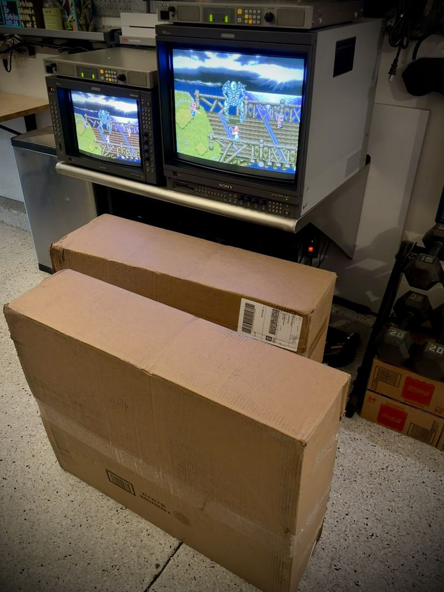
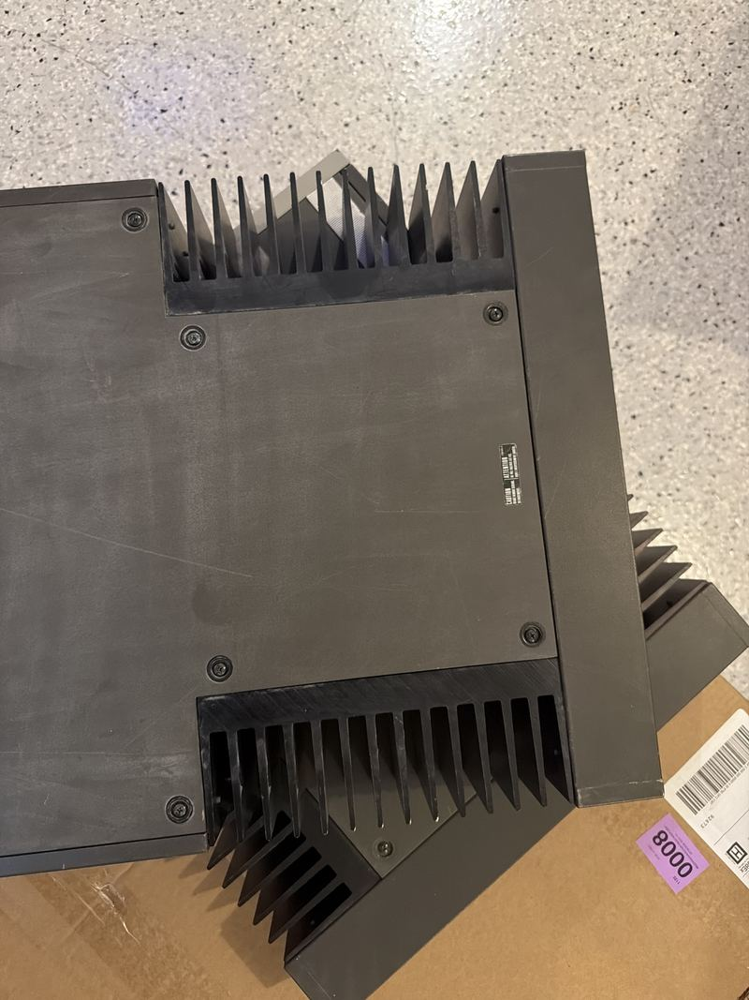
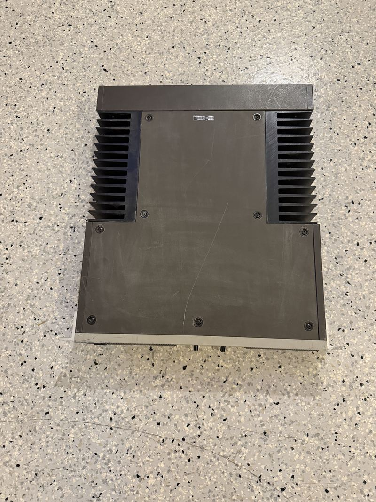
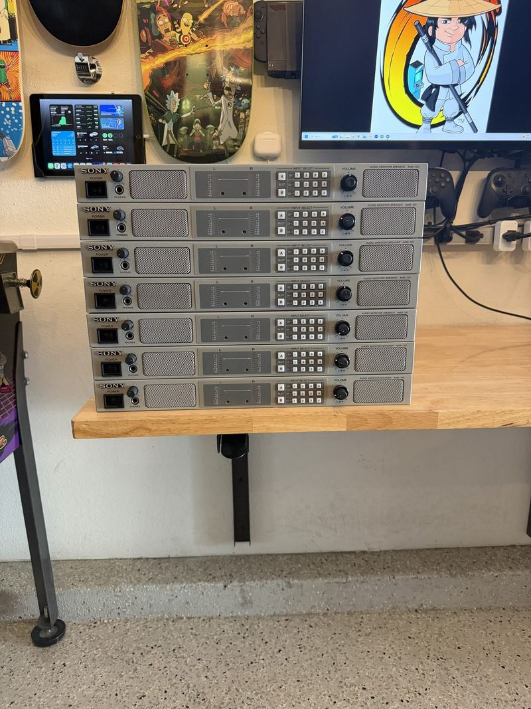
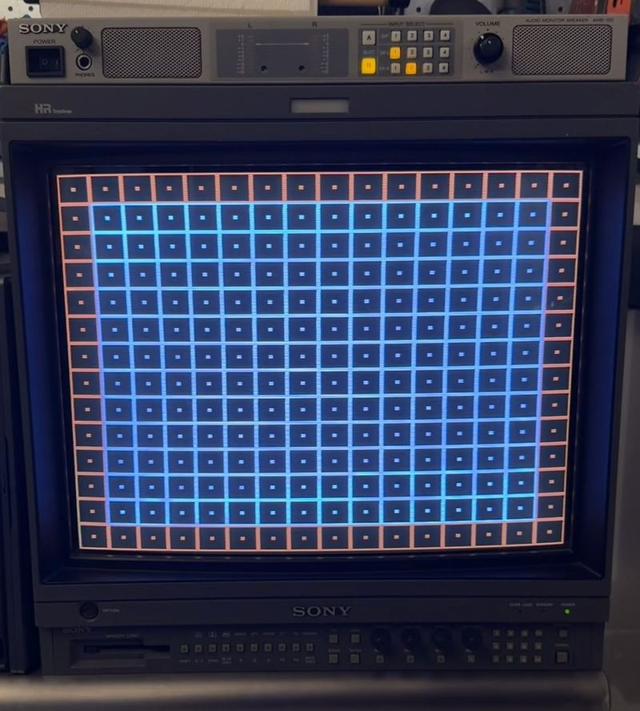
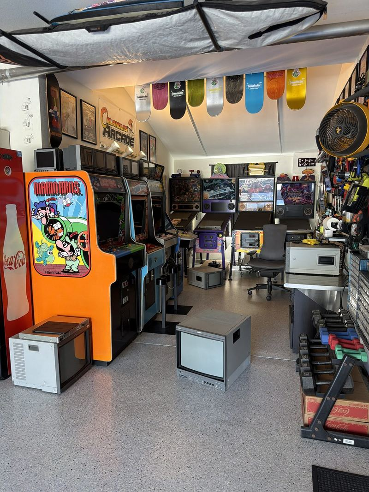

Projects
Everything here gets worked on, not just displayed. The current bench queue, planned builds, and a trail of completed restorations.
On the bench now
Sony AMS-3 pair — intake and triage
Two AMS-3s, the big analog ancestors of the AMS-100 rack, arrived untested and turned out to be monsters: 35 lbs apiece — a 14-inch PVM's worth of steel and heatsink for a speaker — and loud enough to hold their own in a room full of running CRTs. Both have scratchy volume pots, and one VU meter is refusing to move. Triage starts this weekend.
Williams Indiana Jones — cold-boot chase
An intermittent failure on cold boot. The interlock switch has been replaced and ruled out; a memory-protect switch is on order and next in line. Classic 90s Williams diagnosis: one suspect at a time.
BKM card hunt for the BVM-20E1U
The primary E/F-series broadcast monitor has two open card slots waiting for the right input cards. See the wanted list.
Sony AMS-100 monograph
A deep technical write-up on the Sony AMS-100 — history, internals, and module configurations — drawing on the four units in the collection.
JVC X'Eye — full servicing
The Genesis/Sega CD combo unit is off at iFixRetro (@ifixretro) for a complete going-over. It'll come home better than new.






Planned builds
WLED garage lighting
Addressable RGB throughout the arcade bay: WS2815 strip, ESP32 running WLED, a proper Mean Well supply, and aluminum channel so it looks built-in, not taped-on.
Arcade bay airflow
A room full of running CRTs makes real heat. A thermostat-controlled exhaust fan is the plan for keeping the tandem bay happy in summer.
Completed
Big Blue PSU rebuild
Full rebuild of the cabinet's switching supply, with voltages trimmed to spec. The foundation everything else in the cab depends on. Before and after →
Indiana Jones board replacement
Rottendog main driver board and Fliptronics board fitted to the Williams widebody, alongside a full shop-out. The full work log →
Big Blue side art installed
The decal hunt paid off — Capcom-logo side art is on the cabinet, finishing the look the PSU rebuild started. The full work log →
Capcom Q-Sound amp repair
RCA jack reflow on a CPB-001A Q-Sound amplifier — small fix, big soundstage. The full work log →
LMD fleet scan-mode setup
The LMD squadron configured for zero scan (with the 940W on Normal), trading a little edge clipping for the full-frame look.
BVM-20E1U calibration
Chased down a gain calibration quirk on the primary BVM — the kind of menu-diving only broadcast monitors ask of you.
PS2 MemCard Pro 2 setup
A PS2 slim running its library through FMCB/OPL from a MemCard Pro 2 — modern convenience, original hardware.